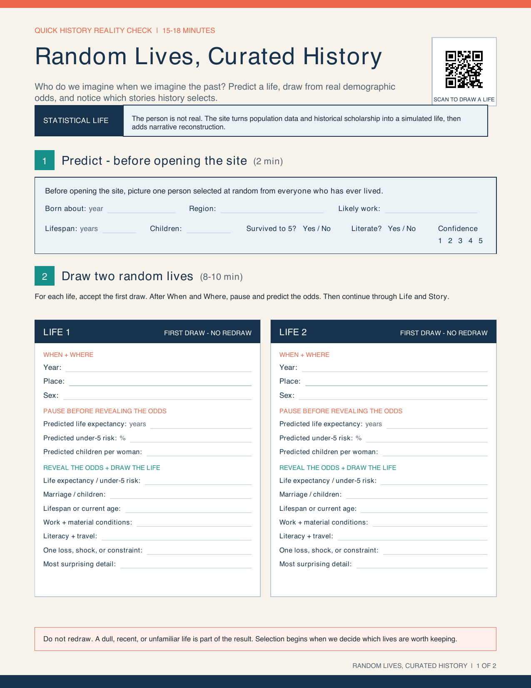
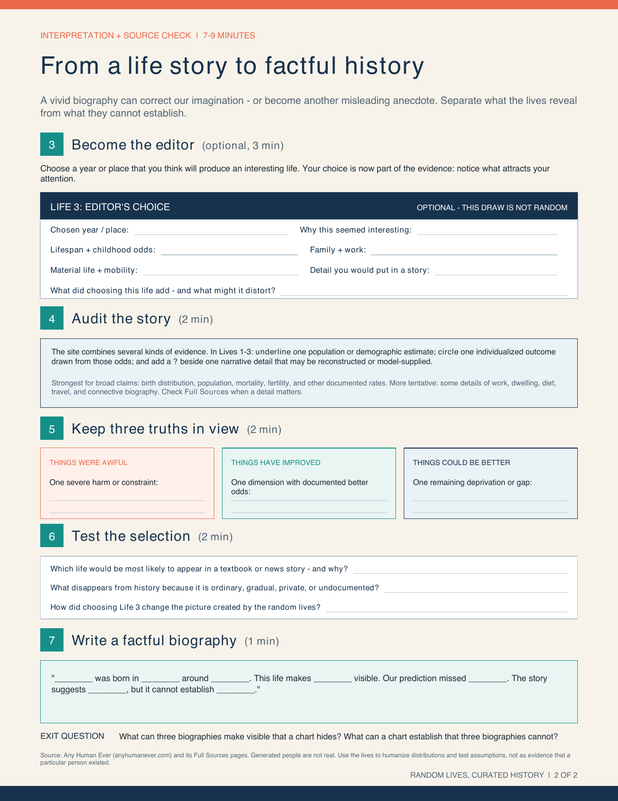
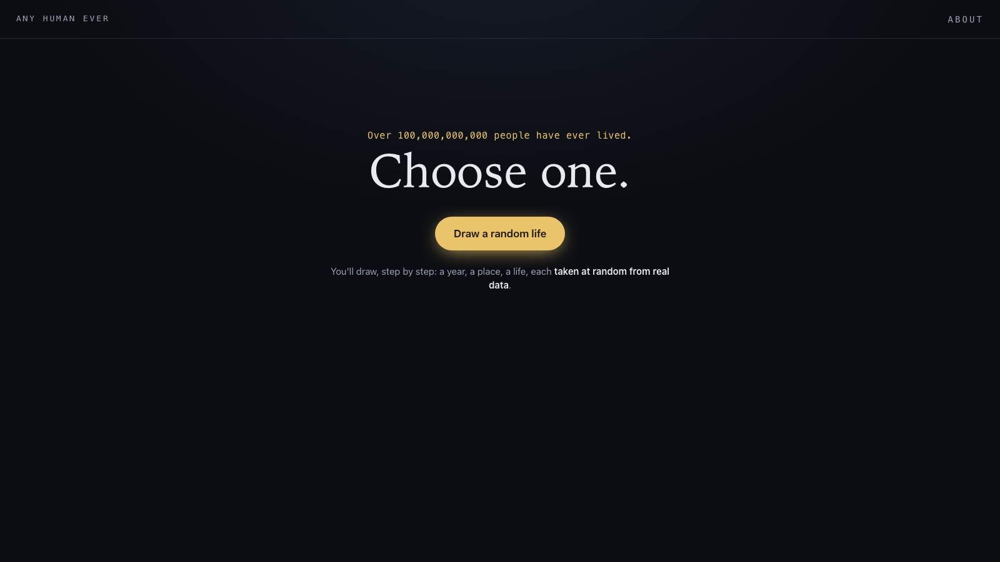

AS.001.219 · Session 3 · September 8, 2026
Baltimore groups
and random lives
Places shape stories. Stories shape what we notice about progress.
FYS: Progress · Johns Hopkins University
Today
Two ways of selecting a story
Baltimore
Your group begins with a place, then asks whose progress becomes visible there.
Random lives
The activity begins with demographic odds, then asks how a life becomes a historical story.
Group 1 · Site 11
Transit infrastructure and arts-led revitalization
Station North / Baltimore Penn Station
Group roster: See Canvas
- How has the station's role changed since 1911?
- What does the renovation reveal about urban progress?
- Who benefits when transit investment and arts development meet?
Group 2 · Site 8
Cultural institutions, patronage, and civic progress
Baltimore Museum of Art
Group roster: See Canvas
- How does a city decide that art counts as public progress?
- Who shaped the collection, and who gets represented?
- How do access, funding, and location shape the museum's civic role?
Group 3 · Site 2
Medical innovation, public health, and East Baltimore
Johns Hopkins Hospital & Medical Campus
Group roster: See Canvas
- How did Hopkins change medicine and the surrounding city?
- Who benefits from medical innovation?
- How should the story include displacement, access, and trust?
Group 4 · Site 3
Knowledge economy, urban change, and shared gains
Science + Technology Park at Hopkins
Group roster: See Canvas
- What turns university research into a local innovation cluster?
- Which institutions connect science to firms and jobs?
- How can the surrounding neighborhood share in the gains?
Random Lives, Curated History · 2 minutes
Predict
Birth year, region, work, lifespan, children, literacy.
Commit
Record your confidence before the evidence appears.
Activity handout


Use the handout
Accept the first two random draws. Pause after When and Where to predict the odds.
Draw two lives · 8–10 minutes

Accept the first draw
Draw a year, a place, a life, and a story. Do not redraw because a result seems dull or unfamiliar.
Open Any Human EverOptional editor's choice · 3 minutes
Your choice becomes part of the evidence
- Choose a year or place that seems likely to produce an interesting life.
- Record why it attracted your attention.
- Ask what the choice adds and what it may distort.
Source check · 2 minutes
Audit the story
Underline
One population or demographic estimate.
Circle
One individualized outcome drawn from those odds.
Add a ?
One narrative detail that may be reconstructed or model-supplied.
A vivid biography can correct our imagination. It cannot establish a population-level claim by itself.
Interpretation · 2 minutes
Keep three truths in view
Things were awful
Name one severe harm or constraint in the life.
Things have improved
Identify one dimension with documented better odds.
Things could be better
Name one remaining deprivation or gap.
Exit question
Then ask the same question of your Baltimore site: whose life will your video make visible, and what broader evidence will you still need?